Find your own rhythm.
Set a focus session that fits your day. Snooze when you need another moment, or take a break whenever you’re ready.
A tiny companion with a big reminder:
you deserve a little break, too.
Stay in your flow, stretch between sessions, and remember that glass of water. Pixel Buddy makes taking care of yourself feel a little more friendly.
 YOUR BUDDY IS HERE
YOUR BUDDY IS HEREGood habits don’t need to be complicated.
Your buddy keeps the little things close.
Set a focus session that fits your day. Snooze when you need another moment, or take a break whenever you’re ready.
When it’s break time, your buddy leads a short stretch, a 20-20-20 eye refresh, or a breathing break, and does it with you. Smart pause keeps the timer in step with your day.
Your buddy celebrates with you: limited-time festival characters you can claim with a few breaks and keep. Pick a color and a name, and on desktop bring your own GIF or video too.
Drank a glass away from your desk? Add it in one tap. Then turn your focus time, breaks, and water into a picture to share with friends.
Let’s make a little space to focus.
Interactive preview · try “Take a break” for a guided stretch.
During a festival, your buddy turns into a one-of-a-kind festive character. Take a few breaks while it lasts and it’s yours to keep. Miss it, and you wait a whole year.
Nine festivals a year, from New Year and Sankranti & Pongal to Eid, Holi, Onam, Diwali, and Christmas. Which ones will you collect?

Who will your buddy be next? 👀
Choose the download for your device. Desktop builds come straight from GitHub Releases.
Open Pixel Buddy, choose your focus routine, and adjust reminders to suit your day.
Keep your buddy nearby. Work, rest, sip, repeat. Your settings stay on your device.
No checkout. No email gate.
Just a small gift for your everyday.
Checking the latest GitHub release…
Desktop companion · x64
Installer · .exeApple silicon & Intel
Disk image · .dmgDesktop companion · x64
AppImage & DebianBrowser extension · in your tabs
Free on the Chrome Web Store · works in Microsoft Edge tooPixel Buddy is free and open source, and it isn’t signed with a paid Apple or Microsoft certificate yet. So the first time you open it, your computer asks you to confirm. You only do this once.
Only do this for files from this site or Pixel Buddy’s GitHub releases, and never turn off Gatekeeper or SmartScreen. Apple’s guide ↗
One command fetches the latest release and checks it’s genuine. It only downloads; you choose when to install.
All downloads are hosted on GitHub. Browse every release ↗ · MIT license ↗
Yes. Pixel Buddy is free and open source under the MIT license. You can use it, share it, and make it your own.
The app stores your preferences, media, and daily counters locally. The Chrome extension keeps its settings in your browser and never reads or sends the pages you visit. There is no account or analytics service. This website contacts GitHub to check available releases. Read the privacy policy.
Desktop builds aren’t signed with a paid certificate yet, so macOS asks you to allow the app in Privacy & Security and Windows may show SmartScreen the first time. See the one-time steps. Download only from this site or the project’s GitHub releases.
On macOS, optional smart monitoring uses Accessibility permission. You can turn monitoring off and use regular timers instead.
Absolutely. Share the website or GitHub release link so they can choose the right version. Found a bug or have an idea? Tell us on GitHub.